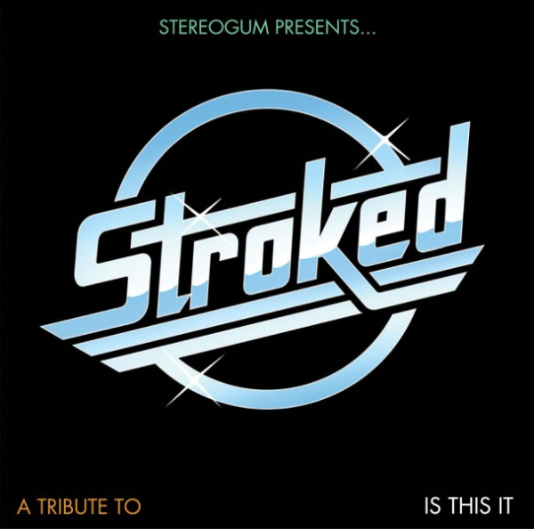
01Alone, Together
Austra – Stereogum Presents… STROKED: A Tribute To Is This It (2011)
orig. The Strokes
02
Love Buzz
Anika – Anika (2010)
orig. Shocking Blue
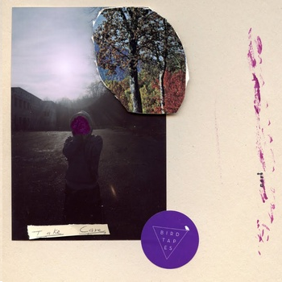
03Teenage Dream
Orca Orca – Top 40 Compilation (2013)
orig. Katy Perry
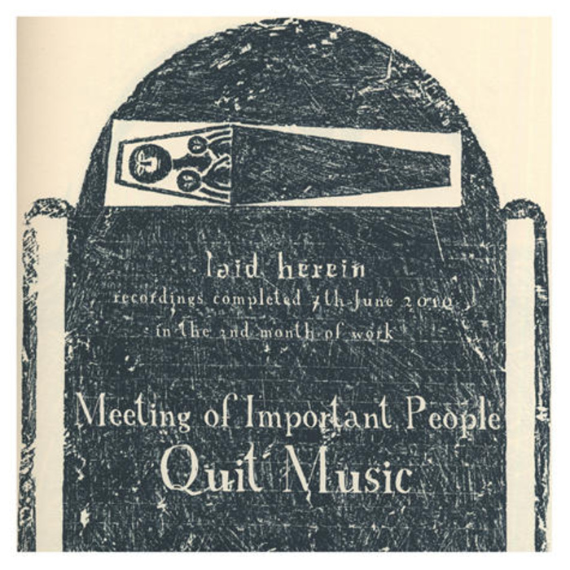
04Come On Down To My Boat
Meeting of Important People – Quit Music (2010)
orig. Every Mother's Son
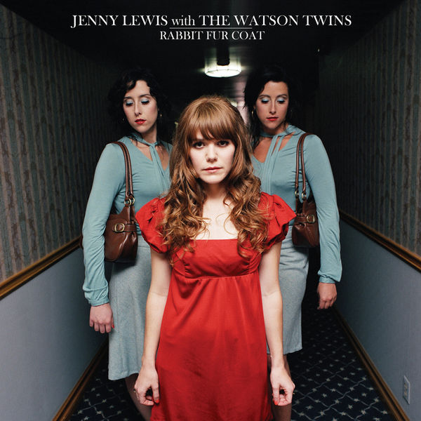
05Handle With Care
Jenny Lewis & The Watson Twins (Featuring Bright Eyes, Ben Gibbard & M.Ward) – Rabbit Fur Coat (2005)
orig. Traveling Wilburys
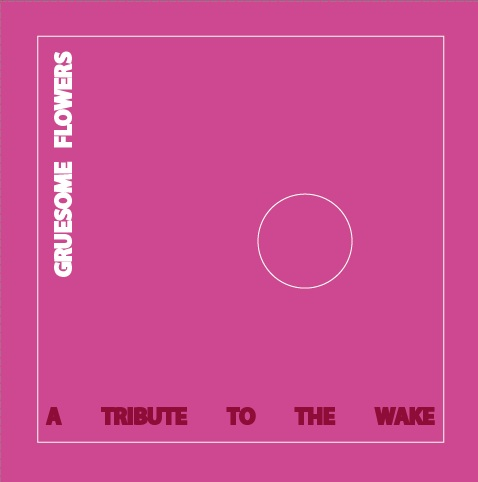
06Talk About The Past
Craft Spells – Gruesome Flowers 2: A Tribute To The Wake (2012)
orig. The Wake
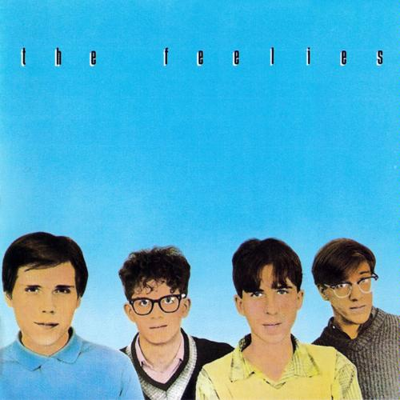
07I Wanna Sleep In Your Arms
The Feelies – Crazy Rhythms (1980)
orig. Jonathan Richman
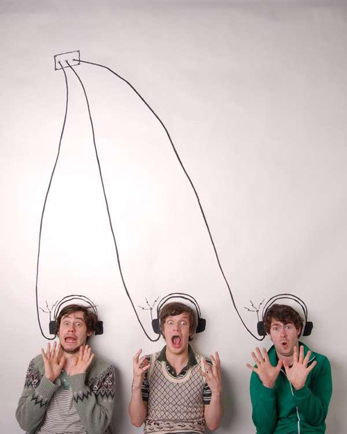
08I'm Good I'm Gone
Friendly Fires – Uncovered 2 (2010)
orig. Lykke Li
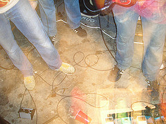
09German Love
The Newspapers – Unreleased (2008)
orig. Starfucker
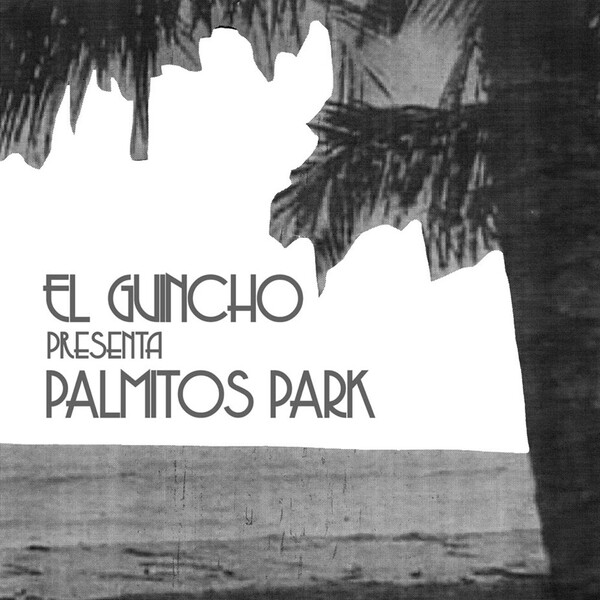
10Palmitos Park
The Ruby Suns – Palmitos Park (2008)
orig. El Guincho
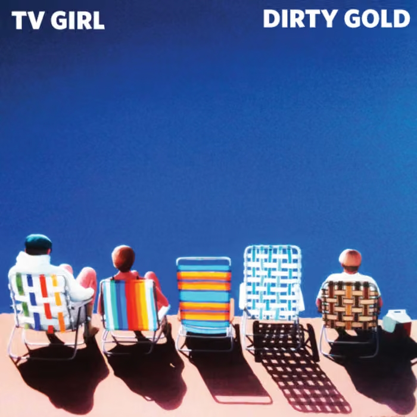
11Overboard
TV Girl – TV Girl/Dirty Gold Split Digital 7" (2011)
orig. Dirty Gold
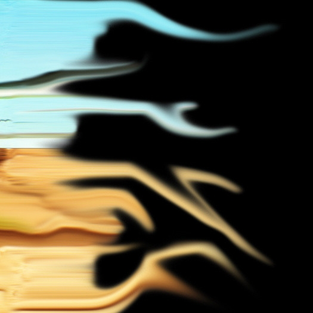
12Every Morning
Kohwi – Hidden Trees Remixes + Extras (2011)
orig. Sugar Ray
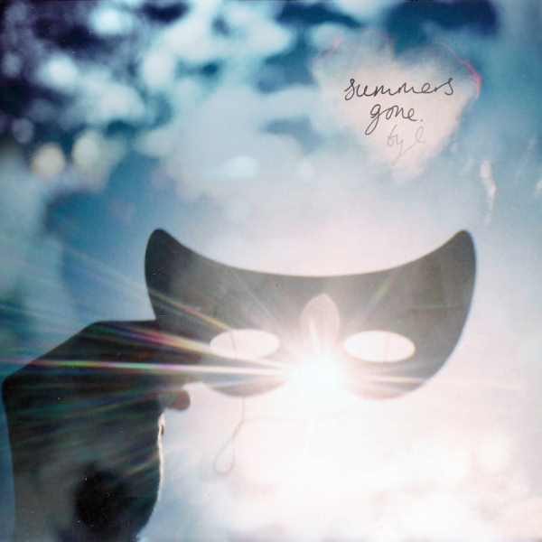
13Local Joke
Millionyoung – Summers Gone (2010)
orig. Neon Indian
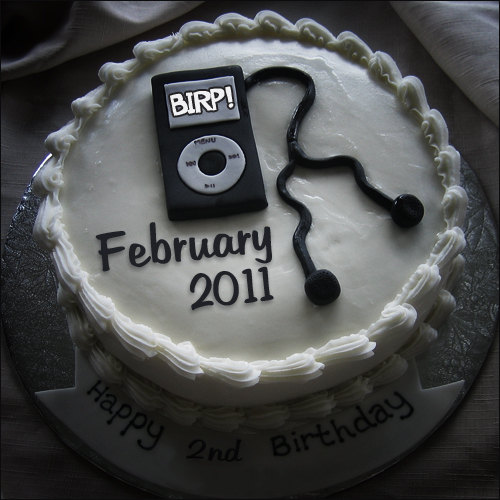
14Road to Nowhere
COOLRUNNINGS – Blalock's Indie/Rock Playlsit: February (2011) (2011)
orig. Talking Heads
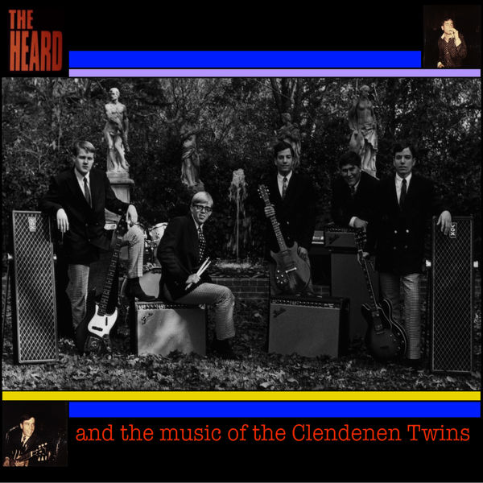
15You're Gonna Miss Me
The Heard – The Heard and the Music of the Clendenen Twins (2012)
orig. The 13th Floor Elevators
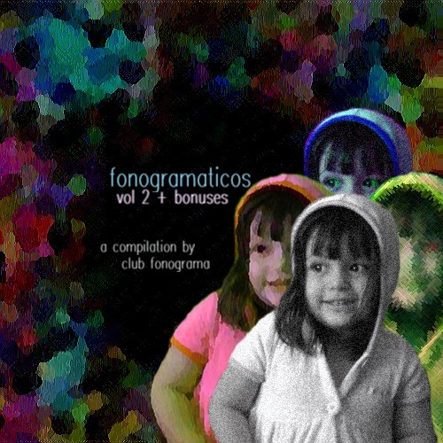
16La Despedida
Babaluca – Fonogramaticos Vol.2 (2009)
orig. Manu Chao
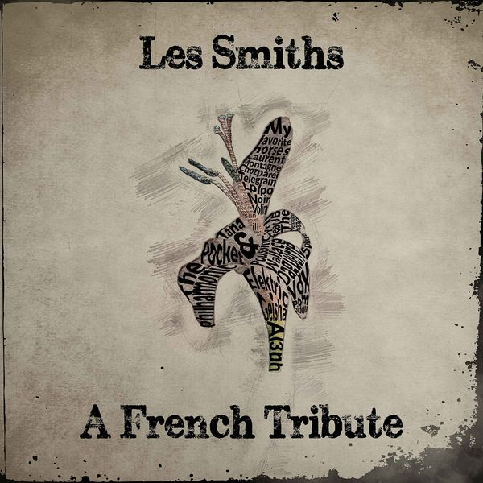
17Handsome Devil
Elecktric Geisha – Les Smiths: A French Tribute (2017)
orig. The Smiths
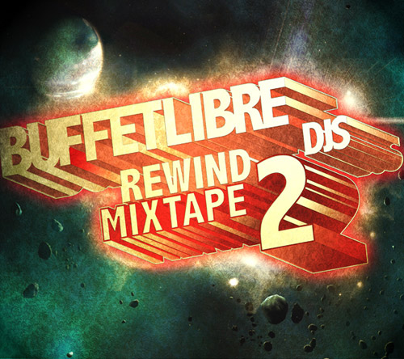
18Ever Fallen In Love
Sportsday Megaphone – Buffetlibre Rewind 2 (2009)
orig. Buzzcocks
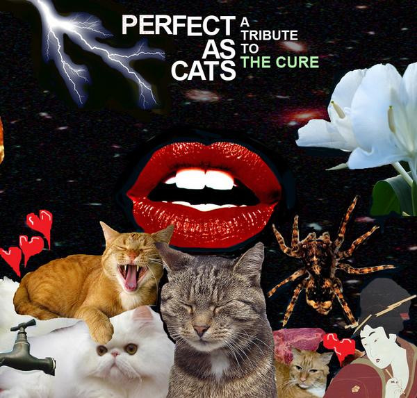
19Inbetween Days
Blackblack – Perfect As Cats: A Tribute To The Cure (2008)
orig. The Cure
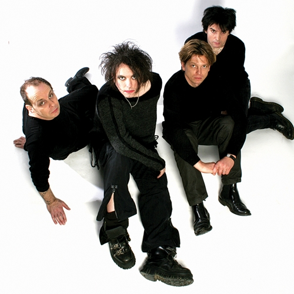
20Love Will Tear Us Apart
The Cure – [Internet Single] (2000)
orig. Joy Division
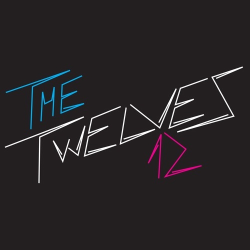
21Nightvision
The Twelves – Nightvision (2026)
orig. Daft Punk
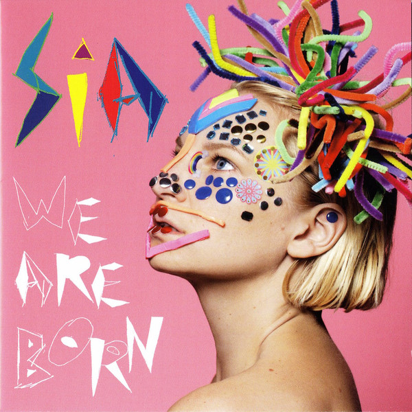
22You've Changed
Sia – We Are Born (2010)
orig. Lauren Flax
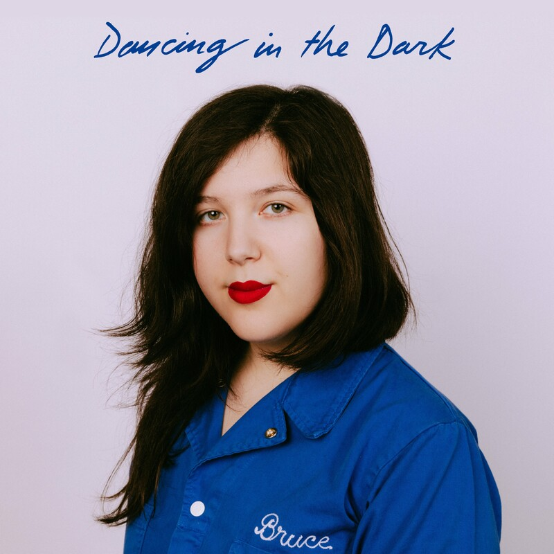
23Dancing In The Dark
Lucy Dacus – Dancing In The Dark (2019)
orig. Bruce Springsteen
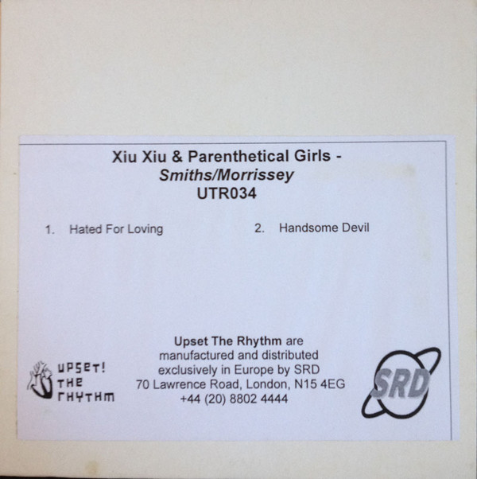
24Handsome Devil
Xiu Xiu / Parenthetical Girls – Hated For Loving / Handsome Devil (2009)
orig. The Smiths
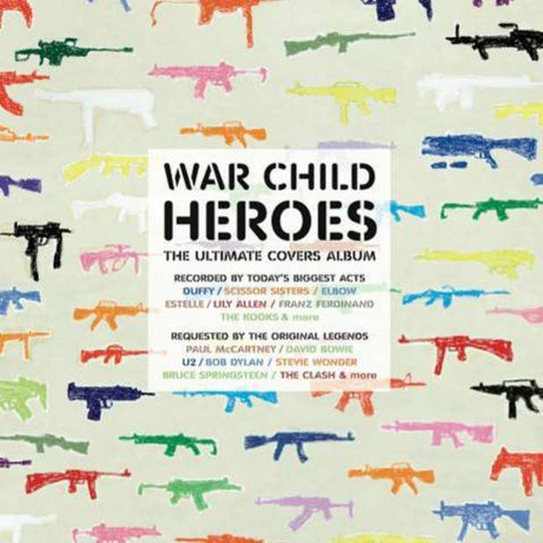
25Heroes
TV On The Radio – War Child Heroes (2009)
orig. David Bowie